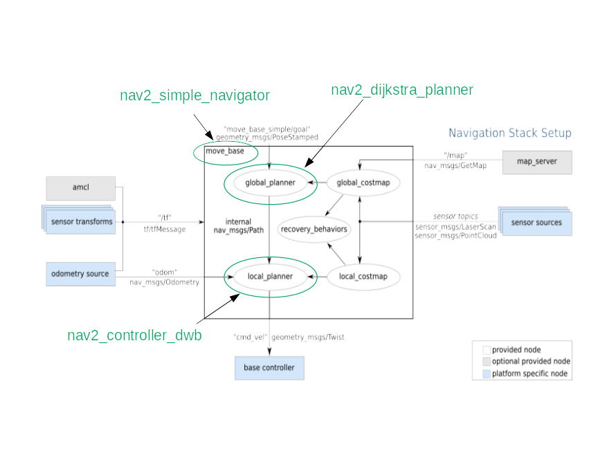

ROS to ROS 2 Navigation¶
move_base has been split into multiple components.
Rather than a single monolithic state machine, navigation 2 makes use of action servers and ROS 2’s
low-latency, reliable communication to separate ideas. A behavior tree is used to orchestrate these tasks.
This allows Navigation2 to have highly configurable navigation behavior without programming by rearranging tasks
in a behavior tree xml file.
The nav2_bt_navigator replaces move_base at the top level, with an Action interface to complete a navigation task with a tree-based action model.
It uses Behavior Trees to make it possible to have more complex state machines and to add in recovery behaviors as additional Action Servers.
These behavior trees are configurable XMLs and we provide several starting examples.
The planning, recovery, and controller servers are also action servers that the BT navigator can call to compute. All 3 servers can host many plugins of many algorithms each and individually called from the navigation behavior tree for specific behaviors. The default plugins provided are ported from ROS 1, namely: DWB, NavFn, and similar recoveries such as spinning and clearing costmaps. A new recovery for waiting a fixed duration was also added. These servers are called from the BT navigator through their action servers to compute a result or complete a task. The state is maintained by the BT navigator behavior tree.
All these changes make it possible to replace any of these nodes at launch/run time with any other algorithm that implements that same interface. See each package README.md for more details.
{kind=link}
Note: nav2_simple_navigator no longer exists, it has been replaced by nav2_bt_navigator.
In Summary:
Ported packages:
amcl: Ported to nav2_amcl
map_server: Ported to nav2_map_server
nav2_planner: Replaces global_planner, hosts
Nplanner pluginsnav2_controller: Replaces local_planner, hosts
Ncontroller pluginsNavfn: Ported to nav2_navfn_planner
DWB: Replaces DWA and ported to ROS 2 under nav2_dwb_controller metapackage
nav_core: Ported as nav2_core with updates to interfaces
costmap_2d: Ported as nav2_costmap_2d
New packages:
nav2_bt_navigator: replaces
move_basestate machinenav2_lifecycle_manager: Handles the server program lifecycles
nav2_waypoint_follower: Can take in many waypoints to execute a complex task through
nav2_system_tests: A set of integration tests for CI and basic tutorials in simulation
nav2_rviz_plugins: An rviz plugin to control the Navigation2 servers, command, cancel, and navigation with
nav2_experimental: Experimental (and incomplete) work for deep reinforement learning controllers
navigation2_behavior_trees: wrappers for the behavior tree library to call ROS action servers